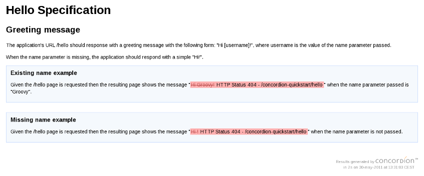
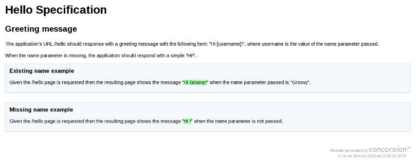

The Concordion plugin provides a convenient integration between the
Concordion framework
---an open source tool for writing automated acceptance tests in Java--- and Grails applications.
This guide documents the installation and usage of the plugin and provides the first steps to
easily starting to write and run active specifications for your Grails applications using Concordion.
This initial version of the plugin provides the following minimal set of features
to integrate Concordion-based tests in a Grails application:
Custom test phase
The plugin adds a new custom
concordion phase type to the already existing in Grails:
unit,
integration,
functional and
other.
A Grails phase type controls the state of the application at test time.
In this initial version, the
concordion test phase is equivalent to the
functional one, i.e.
the application will be fully running for the Concordion tests.
Custom test type
The plugin also defines a new custom
concordion test type that defines the group of tests to
run and the test running mechanism.
The
concordion test type selects those classes with the
suffix
Test or
Tests under the
test/concordion directory. As running mechanism this test type
provides a custom JUnit4 runner resulting from a mixin between the
GrailsTestCaseRunner shipped
with Grails and the
ConcordionRunner from the Concordion framework.
Mechanism to configure Concordion extensions
You can declare globally the Concordion extensions to be used trough the
Grails application's
BuildConfig.groovy. This mechanism is valid both, for your own extensions and for
those provided by the
concordion-extensions project.
In the case of concordion-extensions, the plugin provides a
ConfigurableExtensionFactory which implements
org.concordion.api.extension.ConcordionExtensionFactory, providing a factory mechanism that allow
to configure those extensions that require customization through a simple DSL in the
BuildConfig.groovy.
The initial version includes configurable implementations for the
org.concordion.api.extension.LoggingTooltipExtension and
org.concordion.api.extension.ScreenshotExtension extensions.
You can read about how to configure these extensions in the Configuration section of this guide.
Creation script
Once you have installed the plugin you will have the command
create-concordion-test available in your project.
You can always write an specification from scratch or copy it from a previous one
and modify it, but this command allows you easily create a new sample specification
(and its companion fixture test) by running:
grails create-concordion-test <package.SpecificationName>
The following sections describe how to install the plugin and its typical usage and configuration.
You can install the plugin as usual in Grails:
grails install-plugin concordion
The plugin will download some dependencies like Concordion,
Concordion Extensions and some Selenium libraries required by these extensions.
If the directory
test/concordion is missing in your project, the plugin will
create it when is installed.
Create specifications
The first step will be to create some specifications (acceptance tests) in the
test/concordion
directory. You can create them manually or create a template using the
create-concordion-test script.
For instance, you can execute the command:
grails create-concordion-test org.example.SimpleSpec
This will generate a very simple template for an acceptance test, consisting on the specification file
SimpleSpec.html and a fixture class
SimpleSpecTest.groovy. Both files will be generated under the
test/concordion/org/example directory that the command will create if it does not exist.
Run specifications
Once you have one or more Concordion specs, you can run them using the new phase test concordion in
the following way:
grails test-app concordion:
Running this command will start up the Grails application (this way your specifications can test the
web interface), launch all the Concordion specifications and return the results.
By default all tests are executed, but you can specify the names of the tests (without the "Tests" or other test type suffix) as argument to the command.
Beside the usual test reports generated at
target/test-reports/TESTS-TestSuites.xml,
target/test-reports/plain and
target/test-reports/html, the Concordion tests will generate highly readable reports located
at
target/test-reports/concordion.
There are a couple configuration options for the plugin:
| System property | Default value | Meaning |
|---|
| concordion.output.dir | target/test-reports/concordion | the folder where test reports are generated |
| concordion.extensions | org.concordion.ext.Extensions (use the default configuration of each extension in the concordion-extensions project) | list of Concordion extensions and/or extension factories separated by commas |
Concordion extensions
The plugin also provides another way to configure extensions through application's configuration
instead of the
concordion.extensions system property. You can specify the list of extensions and/or extension factories to use with the following entries in
BuildConfig.groovy:
concordion.extensions = [ "Extension1", "Extension2" ]
concordion.extensionFactories = [ "ExtensionFactory1", "ExtensionFactory2" ]
Note that you should provide fully qualified class names.
If you want to configure the LoggingTooltipExtension or the ScreenshotExtension provided
by the concordion-extensions project, the plugin includes configurable factories
(
es.osoco.grails.plugins.concordion.extensions.ConfigurableLoggingTooltipExtensionFactory
and
es.osoco.grails.plugins.concordion.extensions.CongigurableScreenshotExtensionFactory) to avoid
you have to implement your own factories and can configure the extensions through a simple DSL in
BuildConfig. For example:
import java.util.logging.Levelconcordion.extensionFactories = [
"es.osoco.grails.plugins.concordion.extensions.ConfigurableScreenshotExtensionFactory",
"es.osoco.grails.plugins.concordion.extensions.ConfigurableLoggingTooltipExtensionFactory" ]concordion.screenshotExtensionFactoryConfiguration = {
screenshotOnThrowable true
screenshotOnAssertionFailure true
maxWidth 400
}concordion.loggingTooltipExtensionFactoryConfiguration = {
loggers "org.example.pomodoro.pages, selenium.events"
level Level.FINE
showConsoleLogging true
}The following table shows the configuration options available to configure the
ConfigurableScreenshotExtensionFactory:
| Option | Default value | Meaning |
|---|
| screenshotOnAssertionFailure | true | Sets whether screenshots will be embedded in the output when assertions fail. |
| screenshotOnAssertionSuccess | false | Sets whether screenshots will be embedded in the output when assertions pass. |
| screenshotOnThrowable | true | Sets whether screenshots will be embedded in the output when uncaught Throwables occur in the test. |
| maxWidth | Any | Sets the maximum width that will be used for display of the images in the output. |
| screenshotTaker | By default use org.concordion.ext.screenshot.RobotScreenshotTaker which will take a shot of the full visible screen. | Set a custom screenshot taker. |
The plugin also includes an option to easily use org.concordion.ext.selenium.SeleniumScreenshotTaker,
a custom ScreenshotTaker implementation that "ensures that only the browser window is captured, that the full browser page is captured and that it is captured regardless of whether the browser window is currently displayed".For the moment, this configuration option is a bit tricky: ConfigurableScreenshotExtensionFactory assumes
that if a value for its webDriver property has been set then it should configure the before mentioned SeleniumScreenshotTaker. In other words, to configure this custom screenshot taker you should add the ConfigurableScreenshotExtensionFactory to the concordion.extensionFactories list in your BuildConfig.groovy:concordion.extensionFactories = [ "es.osoco.grails.plugins.concordion.extensions.ConfigurableScreenshotExtensionFactory" ]
import es.osoco.grails.plugins.concordion.extensions.ConfigurableScreenshotExtensionFactoryimport org.openqa.selenium.WebDriver
import org.openqa.selenium.firefox.FirefoxDriverimport org.junit.BeforeClasspublic class YourConcordionTest { WebDriver webDriver @BeforeClass
public static void setup() {
webDriver = new FirefoxDriver()
ConfigurableScreenshotExtensionFactory.webDriver = webDriver
} ...}
The following table shows the configuration options available to configure the
ConfigurableLoggingTooltipExtensionFactory:
| Option | Default value | Meaning |
|---|
| loggers | Empty string (indicates the root logger). | A comma separated list of the names of loggers whose output is to be shown in the Concordion output. |
| level | Level.INFO | the logging java.util.logging.Level for the handler that writes to the Concordion output. Log messages of this level and higher will be output. Note that you need to import the java.util.logging.Level class in your BuildConfig.groovy to use this option. |
| showConsoleLogging | false | false to remove console output for the root logger, true to show the console output. |
This quickstart shows how to use the Concordion plugin to write specifications
that test the web behaviour of a Grails application using
Geb.
Step 1: Create a sample Grails project
grails create-app concordion-quickstart
Step 2: Install the Concordion plugin
cd concordion-quickstart
grails install-plugin concordion
Step 3: Create an specification template
Execute the
create-concordion-test command with the
geb argument:
grails create-concordion-test -web es.osoco.concordion.quickstart.Hello
Running this will create in the
test/concordion/es/osoco/concordion/quickstart
directory a Geb-based specification we can use as starting point, consisting in the
files
Hello.html and
HelloTest.groovy.
Step 4: Create the specification
Change the previous sample specification (
Hello.html) to adapt it to the actual requirements.
Suppose that out imaginary client has requested us an application that reply with a greeting message
that includes the user's name that is sent as a request parameter. We can translate this requirement
to the following Concordion specification:
<html xmlns:concordion="http://www.concordion.org/2007/concordion" xmlns:ext="urn:concordion-extensions:2010">
<head>
<title>Hello Specification</title>
</head>
<body> <h1>Hello Specification</h1> <h2>Greeting message</h2> <p>
The application's URL /hello should response with a greeting message with the
following form: "Hi [username]!", where username is the value
of the name parameter passed.
</p> <p>
When the name parameter is missing, the application should respond with a simple "Hi!".
</p> <div class="example">
<h3>Existing name example</h3>
<p>
Given the /hello page is requested
then the resulting page shows the message "Hi Groovy!"
when the name parameter passed is "Groovy".
</p>
</div> <div class="example">
<h3>Missing name example</h3>
<p>
Given the /hello page is requested
then the resulting page shows the message "Hi !"
when the name parameter is not passed.
</p>
</div></body>
</html>Step 5: Validate the specifications
Once you have writen the specifications it would be convenient that you can review
and validate them with your client before you start with the instrumentation and fixture works.
Step 6: Create the required instrumentation and fixture
Now we instrument the previous specification through Concordion specific attributes:
<html xmlns:concordion="http://www.concordion.org/2007/concordion" xmlns:ext="urn:concordion-extensions:2010">
<head>
<title>Hello Specification</title>
</head>
<body> <h1>Hello Specification</h1> <h2>Greeting message</h2> <p>
The application's URL /hello should response with a greeting message with the
following form: "Hi [username]!", where username is the value
of the name parameter passed.
</p> <p>
When the name parameter is missing, the application should respond with a simple "Hi!".
</p> <div class="example">
<h3>Existing name example</h3>
<p concordion:execute="#h1Message = h1MessageForName(#name)">
Given the /hello page is requested
then the resulting page shows the message
"<span concordion:assertEquals="#h1Message">Hi Groovy!</span>"
when the name parameter passed is "<span concordion:set="#name">Groovy</span>".
</p>
</div> <div class="example">
<h3>Missing name example</h3>
<p concordion:execute="#h1Message = h1MessageForName(#name)">
Given the /hello page is requested
then the resulting page shows the message
"<span concordion:assertEquals="#h1Message">Hi !</span>"
when the name parameter is not passed<span concordion:set="#name"></span>.
</p>
</div></body>
</html>We also need code serving as a bridge between the previous specification
and the system under test. This code is known as test's fixture.
We create the test class
HelloTest.grovy (or we can edit the generated in step 3)
in the following way:
package es.osoco.concordion.quickstartimport geb.Browser
import geb.Pageimport org.openqa.selenium.WebDriver
import org.openqa.selenium.firefox.FirefoxDriverimport org.junit.AfterClass
import org.junit.BeforeClasspublic class HelloTest { private static WebDriver webDriver @BeforeClass
public static void setup() {
webDriver = new FirefoxDriver()
} String h1MessageForName(String name) {
def browser = new Browser(webDriver)
browser.to(HelloPage, name: name)
browser.message
} @AfterClass
public static void close() {
webDriver?.close()
}}class HelloPage extends Page { static url = "http://localhost:8080/concordion-quickstart/hello"
static content = {
message { $("h1").text() }
}
}This test uses Selenium and Geb classes, so we must declare these dependencies adding the following
lines to the project's
BuildConfig.groovy:
dependencies {
…
test("org.codehaus.geb:geb-core:latest.release")
test("org.seleniumhq.selenium:selenium-firefox-driver:2.0a7")
}Step 7: Run the tests with failures (red bar)
We run the previous test with the following command:
grails test-app concordion: Hello
As you can expect, the test should failure because the system under test is not yet implemented.
You can check that loading the resulting HTML report located at
target/test-reports/concordion/es/osoco/concordion/quickstart/Hello.html.
The following figure shows how the test fails with 404 errors:

Step 8: Create a Controller to pass the specification test
grails create-controller es.osoco.concordion.quickstart.Hello
Edit the controller in the following way:
package es.osoco.concordion.quickstartclass HelloController { def index = { render "<h1>Hi ${params.name ?: ''}!</h1>" }}Step 9: Run again the test (green bar)
We run again the Concordion tests:
grails test-app concordion:
In this case the test should run successfully and generate a report like the depicted in the
following figure:

We are creating an example project based on the
Grails Pomodoro application to test the plugin and
provide examples of web-based acceptance tests for a little Grails application.
The example project
grails-pomodoro-concordion is not bundled in the plugin itself and it is still
a work in progress, but you can found it at
OSOCO's GitHub repository.